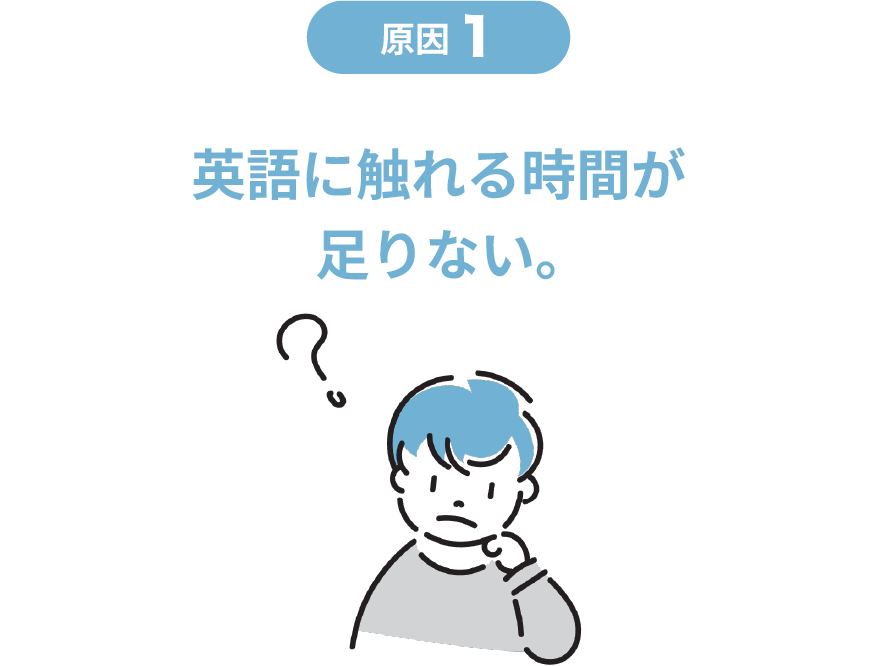
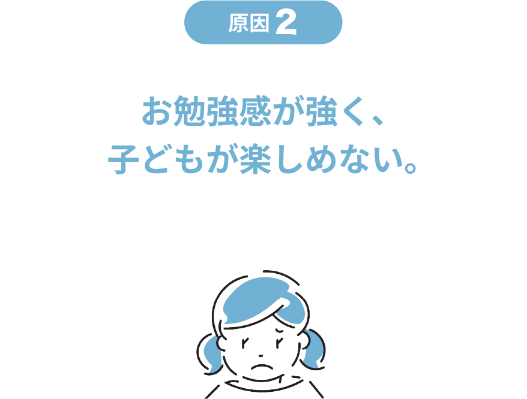
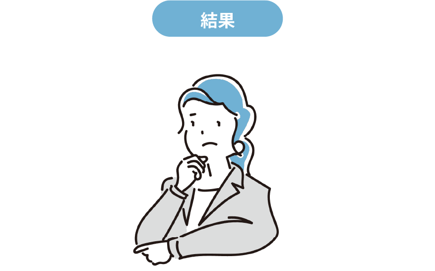
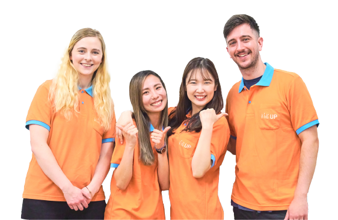
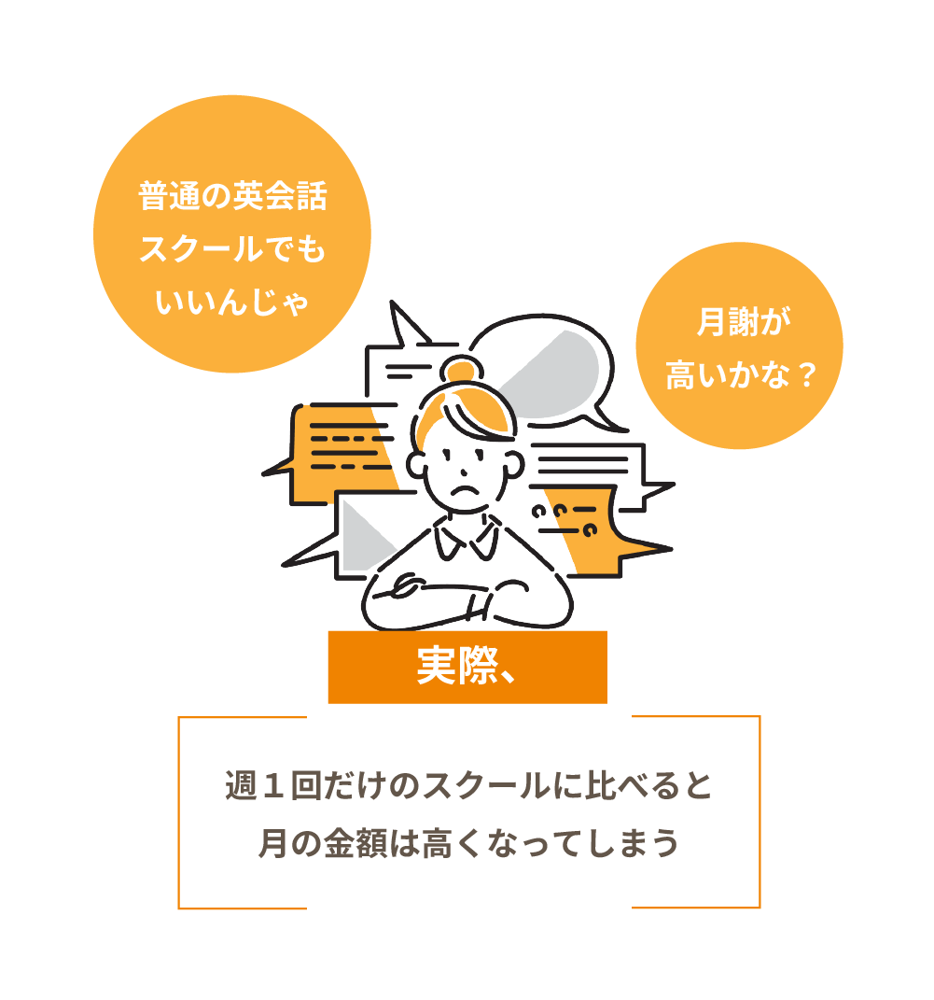
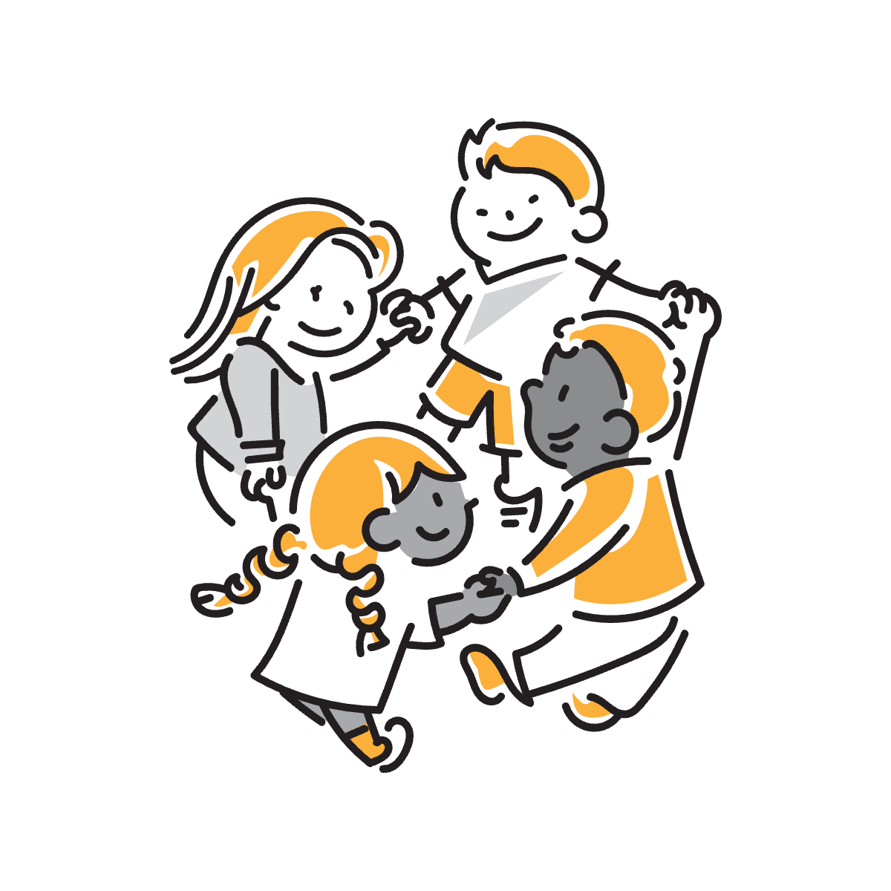
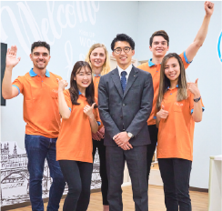
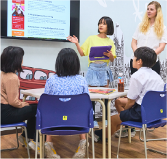
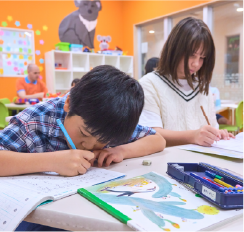
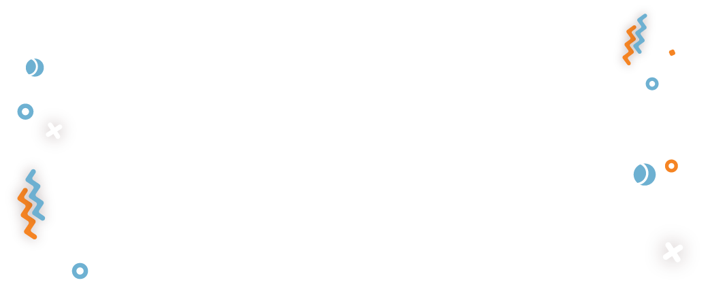

“学童保育型英会話スクール”
って何？
他の英会話スクール
と何が違うの？
英語に触れる時間が異なります。
＜英会話ｽｸｰﾙ＞
週１回
50分〜60分
＜Kids UP＞
週２〜５回
１回３〜６時間
学童保育型の方が
良いの？
学童型の方が英語を聴く・話す時間
が長いので将来英語を“聴ける”
“話せる”可能性が高くなります。
普通の英会話スクールでは
どうして英語が
身につかないの？
-

英語の習得に必要な3000
時間には、週1回の英会話
スクールだと60年必要…
Kids UPなら小学生のうち
に3000時間の英語学習が
可能！ -

普通の英会話スクールだと
つまらないから身につかな
い！場合によっては英語を
キライになってしまうかも… -

普通の英会話スクールだと
短時間で楽しくないレッスン
＝英語が身に付かない！
学童保育型英会話スクールの
Kids UPはこれらの問題を
すべて解決！
英語力を圧倒的に伸ばします！
長時間の
英語環境
応用言語学博士監修のカリキュラム
長時間のオールイングリッシュ
環境とハイレベルレッスン！
だから、
話せる！聴ける！

1時間あたりの
金額に計算
すると安い！

言語を習得できる期間(臨界期)は限られている
＼ Kids UPが選ばれる ／
3つの理由
-
Point
01全校直営で高品質を
約束 先生は全員社員採用で週
5回勤務！ハイクオリティ
のレッスンを提供！ -
Point
02学童保育ではなく"学
童保育型英会話ｽｸｰﾙ" 応用言語学に裏付けされ
たカリキュラムで楽しく、
効果的に英語を学べます。 -
Point
03成果を見える化して
効果を実感 年数回のテストで成果を
共有。効果がわかるので
安心です。

放課後の時間を使って、楽しく、
放課後の時間を使って、楽しく、
効果的に、将来使える本物の英語
力を身に付けさせます！
Kids UPの会員様の声
こんな喜びの感想が
届いています！
お申し込みの流れ
-
STEP
01無料体験の予約ホームページからお近くのスクールの
無料体験をご予約ください。 -
STEP
02無料体験＋
説明会に親子で参加お子様が体験レッスンにご参加の間、
保護者様は説明会にご参加いただきま
す。Kids UPのレッスンを体感のうえ、
ご入会をご検討ください。
※無理な勧誘はないので安心してご参加ください。
よくある質問
無料体験は、見学できますか？
無料体験レッスンや説明会を随時行っております。日程が合わない方
には個別面談対応も行っておりますのでお気軽にお問い合わせください。幼児のお子様・人見知りが強いお子様は、平日18時以降、または土曜日
開催の少人数開催の体験会参加をお勧めします。
授業はすべて英語で行うの？
レッスン中の会話は基本的にすべて英語で行います。もちろん、お子さまの
コミュニケーションスキルや成長に合わせて段階的に英語が身につく環境になっていますので、ご安心ください。
送迎サービスはありますか？
指定の小学校・保育園からのお迎えと、ご自宅付近の停車場所まで
お送りする「無料送迎サービス」がございます。
何時まで預かっていただけますか？
最長20:30までお預かりが可能です。時間により、30分単位で
延長料金が発生いたします。
普段どんなレッスンを行うの？
多彩なプログラムにより、楽しみながら英語を学んでいただきます。
例えば、スポーツやクラフト、その他にも学校で学んでいる算数や理科、社会なども英語で学んでいただきます。